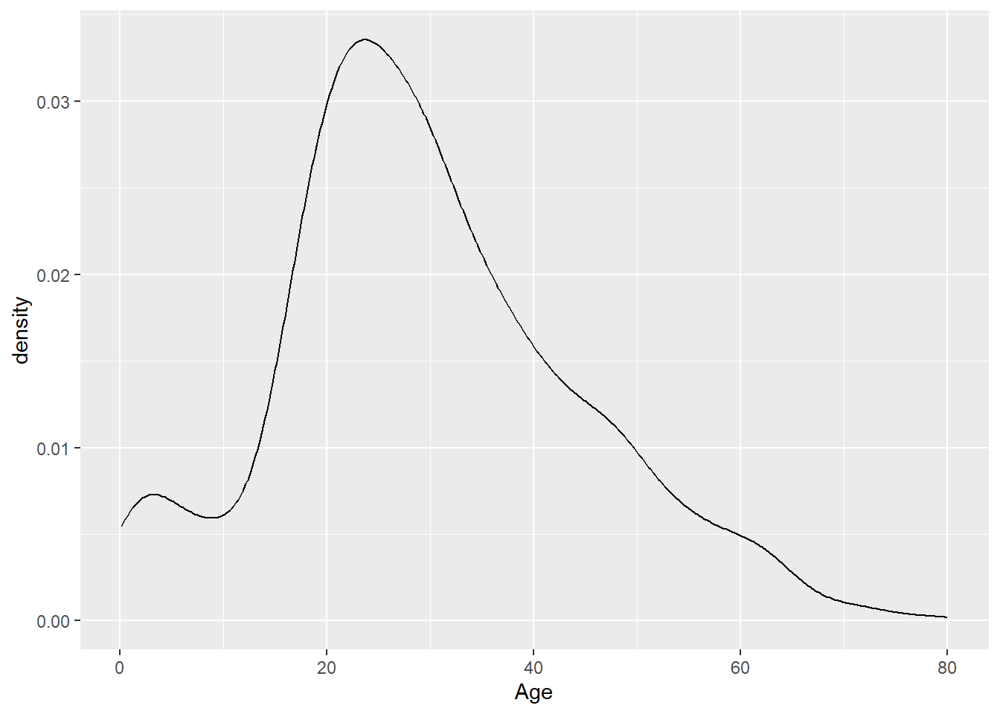
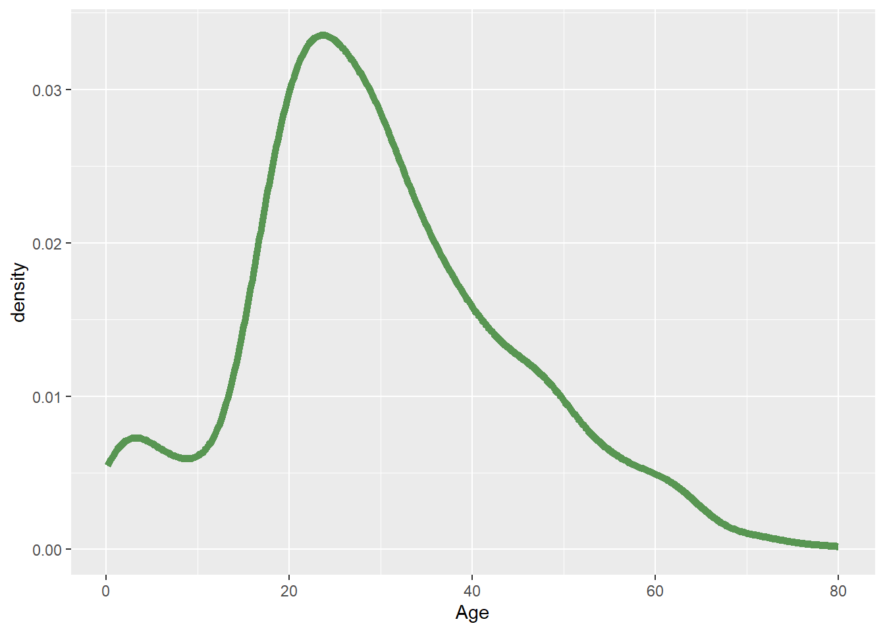
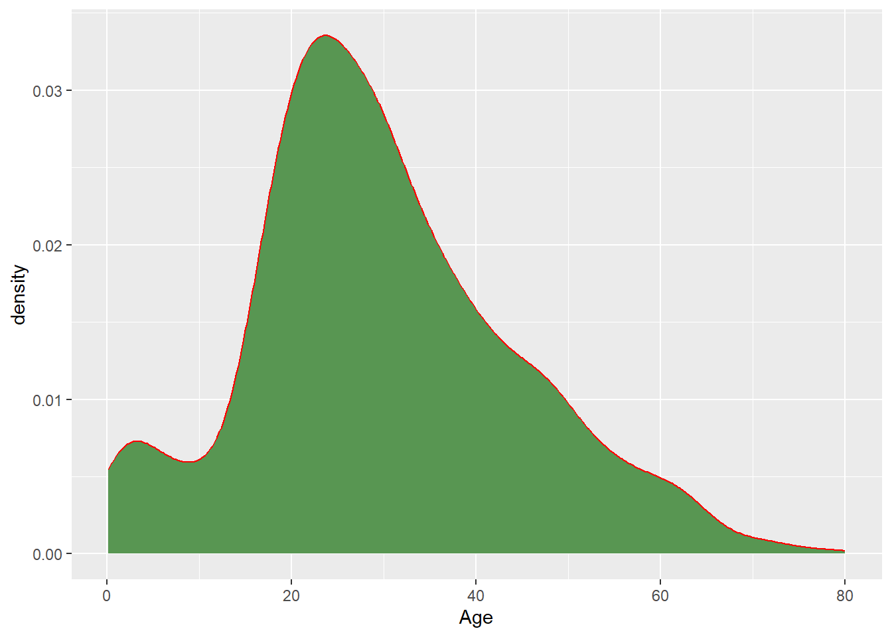
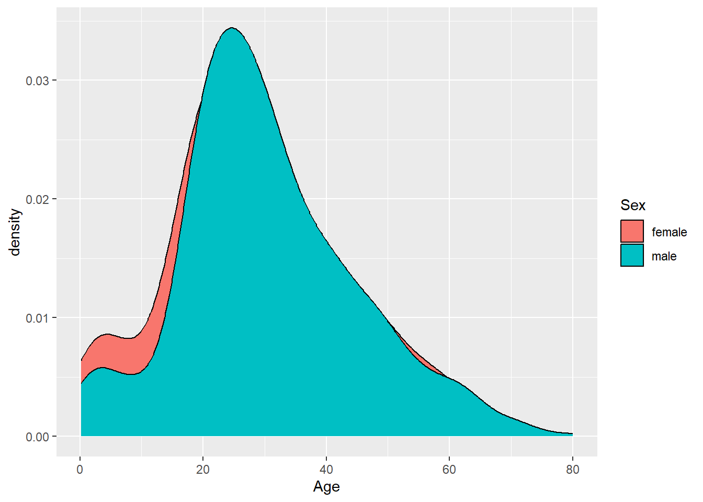
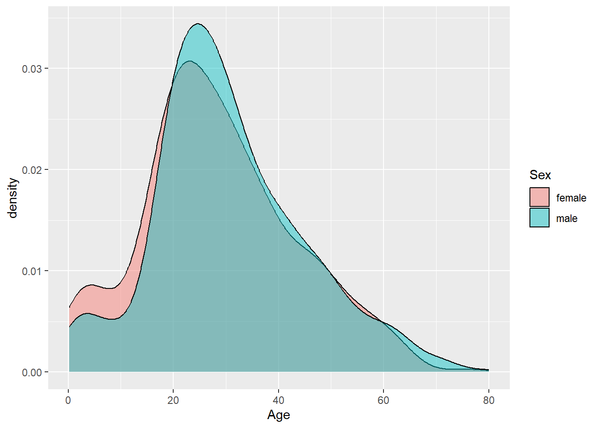
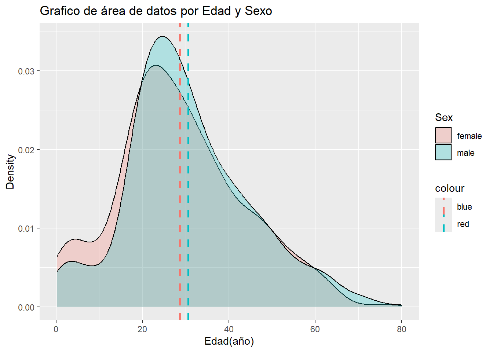
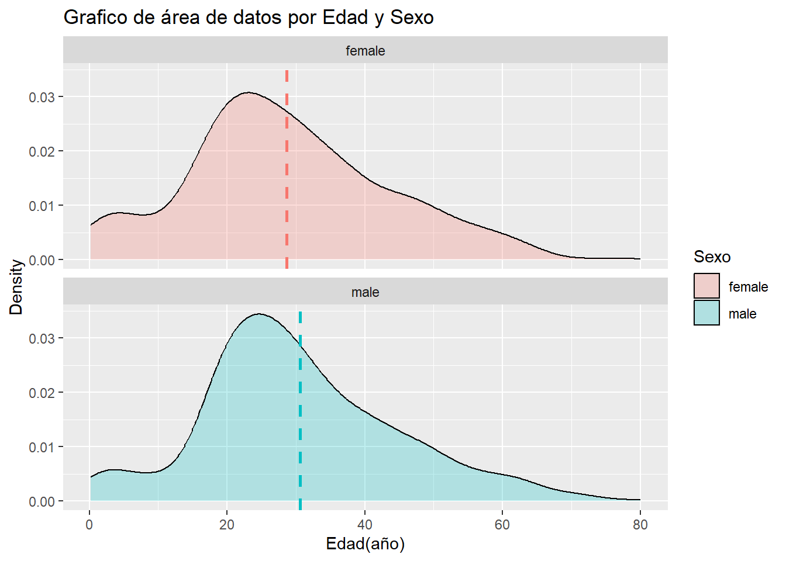
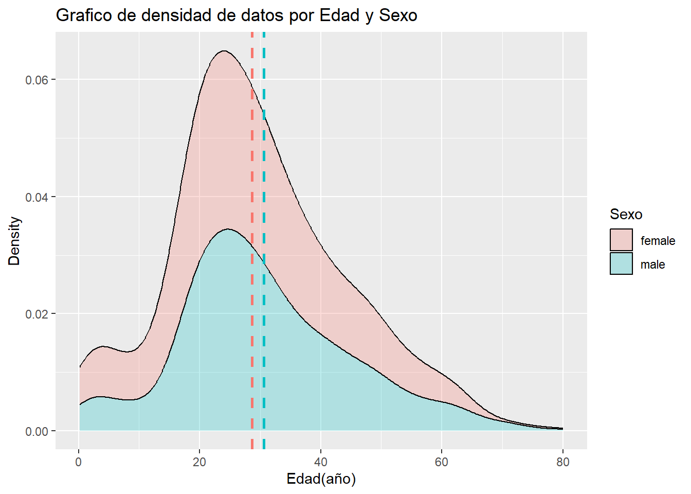

library(tidyverse) # incluye ggplot2
library(readxl) # funciones para importar xlsx
library(janitor) # funciones de limpieza
library(patchwork) #combinar gráficos de ggplot
library(ggExtra)
library(ggthemes) # nuevas temas para los
library(tibble)
library(skimr) # reseumen numerico
library(ggrepel) # añadir etiquetas a los gráficos
library(RColorBrewer) #paletas de colores
library(ggthemes)8 Gráficos de densidad y Area
Un gráfico de área o densidad visualiza la distribución de datos cuantitativos en un intervalo o período de tiempo continuo. Este gráfico es una variación de un histograma que usa suavizado de kernel para trazar valores, lo que permite distribuciones más suaves suavizando el ruido.
Los picos de un gráfico de densidad ayudan a mostrar dónde se concentran los valores durante el intervalo.
8.0.1 Cargar librerias
Librerias necesarias que se deben haber instalado previamente con install.packages(nombre del paquete) o en el panel Package.
8.0.2 Carga de datos
# leer datos de titanic
titanic <- read.csv("data/titanic.csv")
titanic |>
glimpse()Rows: 1,309
Columns: 14
$ Pclass <int> 1, 1, 1, 1, 1, 1, 1, 1, 1, 1, 1, 1, 1, 1, 1, 1, 1, 1, 1, 1, …
$ Survived <int> 1, 1, 0, 0, 0, 1, 1, 0, 1, 0, 0, 1, 1, 1, 1, 0, 0, 1, 1, 0, …
$ Name <chr> "Allen, Miss. Elisabeth Walton", "Allison, Master. Hudson Tr…
$ Sex <chr> "female", "male", "female", "male", "female", "male", "femal…
$ Age <dbl> 29.0000, 0.9167, 2.0000, 30.0000, 25.0000, 48.0000, 63.0000,…
$ Sibsp <int> 0, 1, 1, 1, 1, 0, 1, 0, 2, 0, 1, 1, 0, 0, 0, 0, 0, 0, 0, 0, …
$ Parch <int> 0, 2, 2, 2, 2, 0, 0, 0, 0, 0, 0, 0, 0, 0, 0, 0, 1, 1, 0, 0, …
$ Ticket <chr> "24160", "113781", "113781", "113781", "113781", "19952", "1…
$ Fare <dbl> 211.3375, 151.5500, 151.5500, 151.5500, 151.5500, 26.5500, 7…
$ Cabin <chr> "B5", "C22 C26", "C22 C26", "C22 C26", "C22 C26", "E12", "D7…
$ Embarked <chr> "S", "S", "S", "S", "S", "S", "S", "S", "S", "C", "C", "C", …
$ Boat <chr> "2", "11", "", "", "", "3", "10", "", "D", "", "", "4", "9",…
$ body <int> NA, NA, NA, 135, NA, NA, NA, NA, NA, 22, 124, NA, NA, NA, NA…
$ home.dest <chr> "St Louis, MO", "Montreal, PQ / Chesterville, ON", "Montreal…8.0.3 Significado de las variables del dataframe titanic
survival - Survival (0 = No; 1 = Yes)
class - Passenger Class (1 = 1st; 2 = 2nd; 3 = 3rd)
name - Name
sex - Sex
age - Age
sibsp - Number of Siblings/Spouses Aboard
parch - Number of Parents/Children Aboard
ticket - Ticket Number
fare - Passenger Fare
cabin - Cabin
embarked - Port of Embarkation (C = Cherbourg; Q = Queenstown; S = Southampton)
boat - Lifeboat (if survived)
body - Body number (if did not survive and body was recovered)
8.1 Gráfico de área en R
Se pueden construir gráfico de área en ggplot2 utilizando la geometría geom_density() el cual requiere solo 1 variable numérica como entrada.
En este ejemplo se utiliza la variable númerica Age y se muestra una distribución de la edad de los pasajeros del Titanic. La mayor densidad de datos está en el rango de edad de 15 a 45.
8.1.1 Gráfico de histograma de la edad de los pasajeros del titanic
# grafico de área
titanic |>
ggplot(aes(Age))+
geom_density()Warning: Removed 263 rows containing non-finite outside the scale range
(`stat_density()`).
Al crear este gráfico de área R envia el mensaje:
Warning
Removed 263 rows containing non-finite values (stat_bin).
Indica que se han omitido 263 valores de la variable Age por ser valores nulos.
8.1.2 Modificar color y tamaño de la línea del gráfico
Podemos cambiar el color de la línea del grafico y el tamaño de la línea en la geometría.
#graficos de area
titanic |>
ggplot(aes(Age))+
geom_density(color="#589652",
size=2)Warning: Using `size` aesthetic for lines was deprecated in ggplot2 3.4.0.
ℹ Please use `linewidth` instead.Warning: Removed 263 rows containing non-finite outside the scale range
(`stat_density()`).
8.1.3 Color de relleno en el gráfico
POdemos modificar el color de relleno del gráfico de densidad utilizando nombre de los colores o colores hexadecimales y la propiedad fill en la geom_density().
#graficos de area
titanic |>
ggplot(aes(Age))+
geom_density(color= "red",
fill="#589652")
8.1.4 Gráfico con variable cuantitativa Age y categorica Sex.
Se utiliza la variable categórica sex para crear grupos de datos en las estética de datos a través del relleno del gráfico fill =Sex, esto permite agrupar los datos por la variable categórica y generar dos gráficos de área.
titanic |>
ggplot(aes(Age,
fill=Sex))+
geom_density()Warning: Removed 263 rows containing non-finite outside the scale range
(`stat_density()`).
8.2 Superponer gráficos de área
Se puden superponer los gráficos y mostrar ambos utilizando la estética alpha en la geometría.
En el gráfico de densidad se puede ver que existe una dispersión de datos (ancho del grafico) similar aunque los datos del grupo femenino están ligeramente más dispersos y una centralidad de datos, que indica la media de datos, ligeramente mayor en los hombres.
Esto puede indicar que la media de edad de los varones es mayor que el de las mujeres.
titanic |>
ggplot(aes(Age,
fill=Sex))+
geom_density(alpha=0.45)
8.2.1 Extrae subgrupo de datos por sexo y calculo de la media
Al crear subgrupo de datos por sexo, obtenemos dos nuevos dataFrames, female y male.
Si utilizamos la función mean()podemos calcular la media de los datos de la variable Age de la siguiente forma mean(female$Age).
#subgrupo de datos por sexo
female <- subset(titanic, titanic$Sex=="female")
male <- subset(titanic, titanic$Sex=="male")
nrow(female)[1] 466nrow(male)[1] 843#media de subgrupo de datos son valores nulos
# el resultado será NA
mean(female$Age)[1] NAmean(male$Age)[1] NA
Si ejecutamos la función summary()> podemos ver un resumen de los datos, donde en la variable Age indica 263 valores nulos, este impide que podamos utilizar funciones aritméticas como mean() para hacer cálculos.
#Resumen de datos donde la variable AGE tiene valores nulos o NA
summary(titanic) Pclass Survived Name Sex
Min. :1.000 Min. :0.000 Length:1309 Length:1309
1st Qu.:2.000 1st Qu.:0.000 Class :character Class :character
Median :3.000 Median :0.000 Mode :character Mode :character
Mean :2.295 Mean :0.382
3rd Qu.:3.000 3rd Qu.:1.000
Max. :3.000 Max. :1.000
Age Sibsp Parch Ticket
Min. : 0.1667 Min. :0.0000 Min. :0.000 Length:1309
1st Qu.:21.0000 1st Qu.:0.0000 1st Qu.:0.000 Class :character
Median :28.0000 Median :0.0000 Median :0.000 Mode :character
Mean :29.8811 Mean :0.4989 Mean :0.385
3rd Qu.:39.0000 3rd Qu.:1.0000 3rd Qu.:0.000
Max. :80.0000 Max. :8.0000 Max. :9.000
NA's :263
Fare Cabin Embarked Boat
Min. : 0.000 Length:1309 Length:1309 Length:1309
1st Qu.: 7.896 Class :character Class :character Class :character
Median : 14.454 Mode :character Mode :character Mode :character
Mean : 33.295
3rd Qu.: 31.275
Max. :512.329
NA's :1
body home.dest
Min. : 1.0 Length:1309
1st Qu.: 72.0 Class :character
Median :155.0 Mode :character
Mean :160.8
3rd Qu.:256.0
Max. :328.0
NA's :1188 8.2.2 Eliminar valores nulos NA y calculo de la media de grupos Sex
Podemos utilizar dentro de la funciones aritméticas la función na.omit(variable) para eliminar los valores nulos de la variable Age.
De esta forma calculamos la media de datos para identificar cual grupo tiene un valor central mayor:
female: 28.68
male 30.58
#media de subgrupo de datos sin valores nulos
mean(na.omit(female$Age))[1] 28.68707mean(na.omit(male$Age))[1] 30.58523#mediana
median(na.omit(female$Age))[1] 27median(na.omit(male$Age))[1] 288.2.3 Datos de la media en el gráfico
Mostrar la media de los datos por grupo sex en el gráfico de densidad con la capa geom_vline().
Se añadio el título y se cambio los valores de la etiqueta del eje x, como tambien se modificó la etiqueta de la leyenda.
titanic |>
ggplot(aes(Age,
fill=Sex))+
geom_density(alpha=0.25)+
geom_vline(aes(xintercept=mean(na.omit(female$Age)),
color="blue"),
linetype="dashed", size=1) +
geom_vline(aes(xintercept=mean(na.omit(male$Age)),
color="red"),
linetype="dashed", size=1) +
labs(title="Grafico de área de datos por Edad y Sexo",
x="Edad(año)",
y = "Density")
8.2.4 Gráfico de área por edad en faceta de la variable Sexo
En el siguiente ejemplo utilizaremos para separar los gráficos de área las facetas, particularmente la función facet_wrap() con la variable categórica sex de la siguiente forma, facet_wrap(~Sex, ncol=1), esto generá las facetas por fila, pero debemos utilizar el valor n=col para indicar que solo tendrá una columna.
titanic |>
ggplot(aes(Age,
fill=Sex))+
geom_density(alpha=0.25)+
geom_vline(aes(xintercept=mean(na.omit(Age)),
color="blue"),
linetype="dashed",
size=1) +
labs(title="Grafico de área de datos por Edad y Sexo",
x="Edad(año)",
y = "Density")+
guides(fill = guide_legend("Sexo"),
color = FALSE)+
facet_wrap(~Sex, ncol=1)Warning: The `<scale>` argument of `guides()` cannot be `FALSE`. Use "none" instead as
of ggplot2 3.3.4.Warning: Removed 263 rows containing non-finite outside the scale range
(`stat_density()`).8.2.5 Gráfico de área por edad en faceta de la variable Sexo - opcion 2
Utilizaremos una sola función geom_vline(), adicional que el cálculo de la media no se realizará por cada grupo, sino solo de la variable seleccionada mean(na.omit(Age).
El resultado muestra en apariencia que la línea de la media del sexo femenino es igual a la del sexo masculino, y esto es un error en el gráfico.
media_ <- titanic |>
group_by(Sex) |>
summarise(media=mean(na.omit(Age)))
media_# A tibble: 2 × 2
Sex media
<chr> <dbl>
1 female 28.7
2 male 30.6titanic |>
ggplot(aes(Age,
fill=Sex))+
geom_density(alpha=0.25)+
geom_vline(aes(xintercept=mean(na.omit(Age)),
color="red"),
linetype="dashed",
size=1) +
labs(title="Grafico de área de datos por Edad y Sexo",
x="Edad(año)",
y = "Density")+
guides(fill = guide_legend("Sexo"),
color = FALSE)+
facet_wrap(~Sex, ncol=1)
Este error lo podemos corregir creando un nuevo dataframe que calcula la media por cada categoria de la variable sex, este dataframe llamado mean_, lo utilzaremos con la función geom_vline(data=media_, aes(xintercept=media, color=Sex)) , donde los valores de data representan el dataframe calculado, xintercept, contiene el cálculo de la media por sex y color.
# calculo de la media por sexo
media_ <- titanic |>
group_by(Sex) |>
summarise(media=mean(na.omit(Age)))
media_# A tibble: 2 × 2
Sex media
<chr> <dbl>
1 female 28.7
2 male 30.6titanic |>
ggplot(aes(Age,
fill=Sex))+
geom_density(alpha=0.25)+
geom_vline(data=media_,
aes(xintercept=media,
color=Sex),
linetype="dashed",
size=1) +
labs(title="Grafico de área de datos por Edad y Sexo",
x="Edad(año)",
y = "Density")+
guides(fill = guide_legend("Sexo"),
color = FALSE)+
facet_wrap(~Sex, ncol=1)Warning: Removed 263 rows containing non-finite outside the scale range
(`stat_density()`).
8.2.6 Modificar etiqueta SEX y eliminar etiqueta color.
Al generar las líneas de las media de cada grupo, se crea otra leyenda que indican los colores de la línea, esta leyenda la omitimos utilizando guides(color = “none”) .
titanic |>
ggplot(aes(Age,
fill=Sex))+
geom_density(alpha=0.25)+
geom_vline(aes(xintercept=mean(na.omit(female$Age)),
color="blue"),
linetype="dashed", size=1) +
geom_vline(aes(xintercept=mean(na.omit(male$Age)),
color="red"),
linetype="dashed", size=1) +
labs(title="Grafico de área de datos por Edad y Sexo",
x="Edad(año)",
y = "Density")+
guides(fill = guide_legend("Sexo"),
color = FALSE)8.2.7 Agrupar gráficos de densidad
Para agrupar graficos de densidad se debe utilizar la función position = “stack” en la geometría, este permite apilar un gráfico sobre otro.
titanic |>
ggplot(aes(Age, fill=Sex))+
geom_density(alpha=0.25 ,
position = "stack")+
geom_vline(aes(xintercept=mean(na.omit(female$Age)),
color="blue"),
linetype="dashed", size=1) +
geom_vline(aes(xintercept=mean(na.omit(male$Age)),
color="red"),
linetype="dashed", size=1) +
labs(title="Grafico de densidad de datos por Edad y Sexo",
x="Edad(año)",
y = "Density")+
guides(fill = guide_legend("Sexo"),
color = "none")
8.2.8 PRÁCTICA 1
Crear un gráfico de densidad con la variable FARE y categorica Sex
8.2.9 PRACTICA 2
Creo un gráfico de densidad con la variable FARE y categorica Sex Utilice en la geometria la estetica kernel = c(kernel=“gaussian”).
8.2.10 PRACTICA 3
Calcule la media y los datos de pasajeros del sexo masculino, mayores y menores que la media.
Muestre los 10 primeros datos.